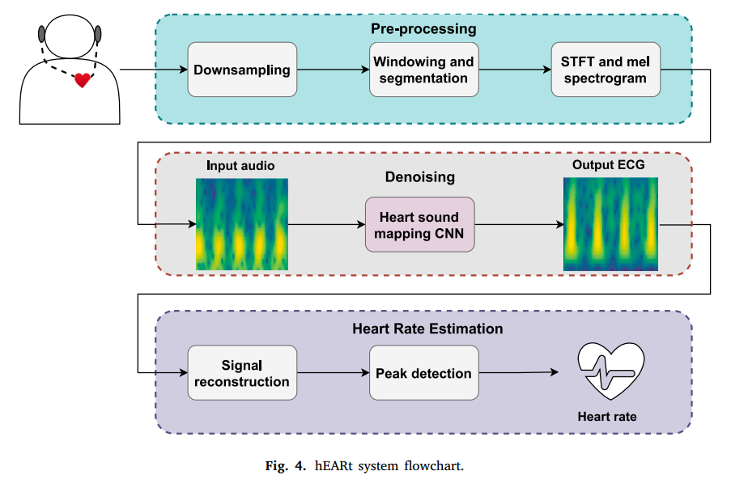
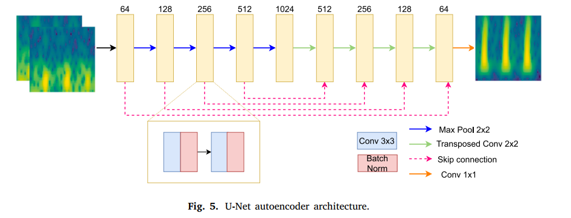
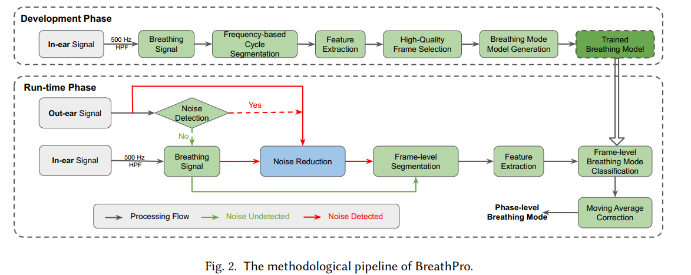
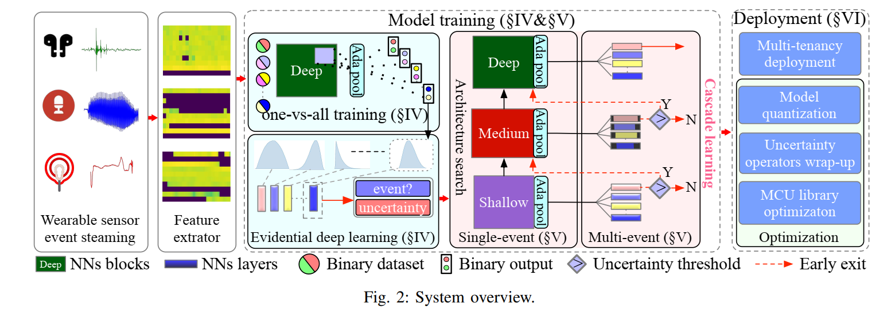
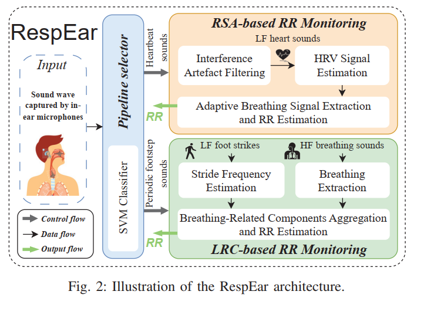
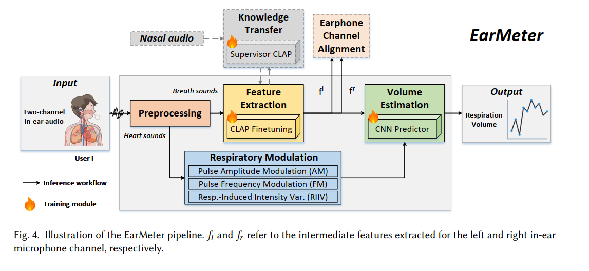
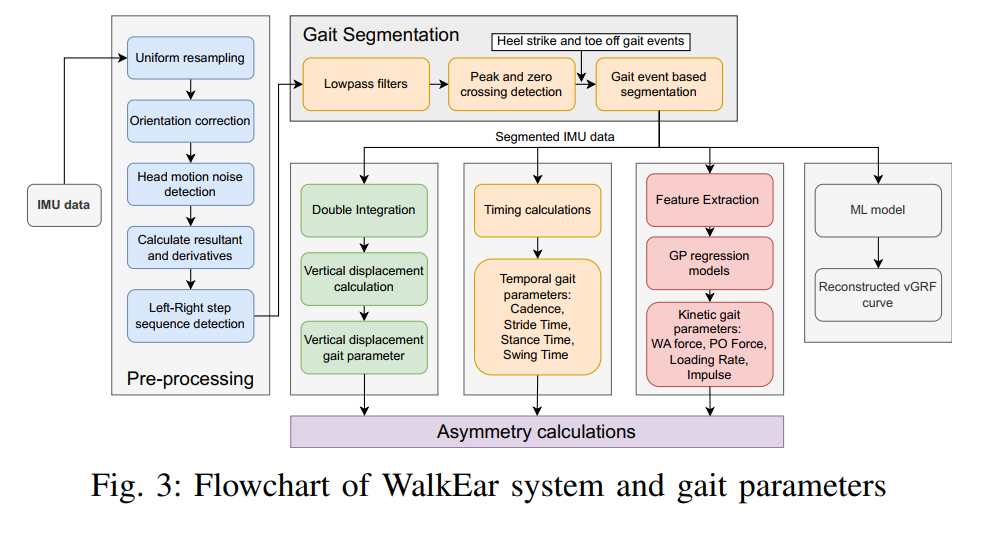

A structured reading note for the main earable and wearable sensing papers from Prof. Cecilia Mascolo's research group.
Why Prof. Cecilia Mascolo's lab?
- The lab focuses on wearable sensing, mobile health, and AI for human-centric sensing.
- Earables are a distinctive sensing modality in this work: in-ear microphones, respiration monitoring, gait analysis, and interactive health applications.
- These papers span signals, machine learning, low-power systems, and user-centered evaluation.
Research themes in this reading
- Earable sensing for respiration, heart rate, gait, and oral behavior.
- Robust signal processing under motion and daily activity.
- On-device event detection and uncertainty-aware models.
- Contrastive learning for non-stationary time series.
- Human-centered applications with data-driven features.
Paper summary table
| No. | Paper | Main focus | Key contribution | Notes |
|---|---|---|---|---|
| 1 | An evaluation of heart rate monitoring with in-ear microphones under motion | In-ear heartbeat sensing | Motion-robust heart rate extraction from ear audio | TODO: fill in dataset, method, accuracy, limitations |
| 2 | BreathPro: Monitoring Breathing Mode during Running with Earables | Running respiration sensing | Classify breathing modes during exercise using ear microphones | TODO: fill in model, sensors, evaluation |
| 3 | UR2M: Uncertainty and Resource-Aware Event Detection on Microcontrollers | Embedded event detection | Uncertainty-aware models for microcontroller deployment | TODO: fill in architecture, energy use, task examples |
| 4 | RespEar: Earable-Based Robust Respiratory Rate Monitoring | Respiratory rate monitoring | Robust respiration estimation from ear-based audio | TODO: fill in signal pipeline, robustness tests |
| 5 | EarMeter: Continuous Respiration Volume Monitoring with Earables | Respiration volume estimation | Continuous tidal volume tracking using ear sensors | TODO: note equation, calibration, results |
| 6 | AI on Wearable Sensing Data for Human Health and Fitness | Wearable AI survey/review | Overview of data-driven wearable sensing for health and fitness | TODO: summarize trends and future directions |
| 7 | WalkEar: holistic gait monitoring using earables | Gait monitoring | Holistic gait analysis using ear-worn devices | TODO: list gait metrics and evaluation |
| 8 | StatioCl: Contrastive Learning for Time Series via Non-Stationary and Temporal Contrast | Time series learning | Contrastive learning tailored for non-stationary time series | TODO: detail loss, datasets, impact |
| 9 | SmarTeeth: augmenting manual toothbrushing with in-ear microphones | Toothbrushing monitoring | Detect brushing actions and quality using ear audio | TODO: note user study, sensing setup, outcomes |
| 10 | HearForce: Force Estimation for Manual Toothbrushing with Earables | Brushing force estimation | Estimate brushing force from ear-worn sensor signals | TODO: describe model, validation, real-world use |
Paper notes
1. An evaluation of heart rate monitoring with in-ear microphones under motion
Abstract: extract heart rate reliably when the wearer is moving.
Key idea
- Use in-ear microphone audio and motion-aware preprocessing to recover heartbeat signals under motion.
- Transform audio into log-mel spectrograms and denoise them with a U-Net encoder-decoder.
- Reconstruct clean audio and estimate HR from the recovered waveform.
System pipeline
- Collect in-ear microphone audio and motion sensor data.
- Convert audio to log-mel spectrograms.
- Denoise spectrograms with a pretrained U-Net.
- Use SSIM loss to preserve local structure during spectrogram reconstruction.
- Reconstruct waveform with Griffin-Lim and extract heart rate.

Architecture
- U-Net encoder-decoder for spectrogram denoising.
- Pretraining on the PASCAL heart sound dataset to improve performance given a small in-ear dataset.
- Input and target are both log-mel spectrograms of heart sound recordings.

Prototype
- Custom 3D-printed earbud with an ear-hook shape for secure placement.
- Designed to leave space for additional sensors and electronics.
- Focused on stable contact and practical form factor for earable health sensing.
Evaluation metrics
- Mean Absolute Error (MAE) of HR compared to reference device.
- Mean Absolute Percentage Error (MAPE) for relative accuracy.
- Bland-Altman agreement analysis across heart rate ranges.
Notes & questions
- Transfer learning is used because the in-ear dataset is small; need to confirm whether the U-Net was fine-tuned on ear audio or only on heart sounds.
- Check whether there are baseline comparisons beyond standard denoising models.
- Reflection: does the paper compare this earable approach with other wearable HR methods such as foot pressure or chest strap?
2. BreathPro: Monitoring Breathing Mode during Running with Earables
Abstract: classify breathing patterns during running in real time.
Notes
- This paper is an extension of the previous work, applying earable sensing to respiration monitoring during exercise.

Summary
- Earable audio is used to recognize breathing mode while running.
- A lightweight classifier distinguishes between different respiratory states.
3. UR2M: Uncertainty and Resource-Aware Event Detection on Microcontrollers
Abstract: they presented a novel Uncertainty and Resource-Aware Event Detection approach for microcontrollers.
Notes
- Methods:
- implemented an architecture search to find the optimal model structure automatically
- conducted scalar quantization of the model weights into 8-bit integers to decrease the model size and further save memory
- removed unnecessary components that are not utilized in the models

- The UR2M system includes two stages: model training and deployment.
- Hardware:
- training stage: Linux server equipped with an Intel Xeon Gold 5218 GPU and NVIDIA Quadro RTX 8000 GPU.
- deployment stage: deployed the shared backbone and heads on two MCUs
- adopted TensorFlow Lite Micro for MCU deployment due to its portability, ease of use, and support for numerous neural network layers and optimized kernels (converted the model to TensorFlow Lite using ONNX representation and the TF Lite converter).
(STM32F446ZE with M4 processor 128 KB of SRAM and 512 KB of flash memory, and STM32F746ZG with M7 processor 1 MB of SRAM and 1 MB of flash memory).
compared with three wearable datasets: in-ear activity recognition, autido event keyword spotting, and heart disorder event detection.
Summary
- Lightweight models are combined with uncertainty estimation and resource-aware scheduling.
- The design targets microcontroller deployment for wearable and edge applications.
Very nice paper.
4. RespEar: Earable-Based Robust Respiratory Rate Monitoring
Abstract: estimate respiratory rate robustly from ear-worn sensors.
Background: performing reliable and non-obtrusive respiratory rate monitoring in daily life is challenging due to motion artifacts and environmental noise. Earables with in-ear microphones offer a promising sensing modality for respiration monitoring, but require robust signal processing to handle real-world conditions.
Methods: RespEar enables the use of respiratory sinus arrhythmia and locomotor respiratory coupling, physiological couplings between cardiovascular activity, gait and respiration, to determin the respiratory rate.
Data collection: they collected in-ear audio when a subjust naturally breathing under 3 conditions: sitting still, walking, and running on treadmill. They also collected reference respiratory rate using a chest strap.

System design:
- 60s estimation windows with 30s overlap for continuous monitoring.
- two paths for RR estimation: presence of rhythmic footsteps or clear heartbeat sounds in the audio
Summary
- Signal processing pipeline combines ear audio and respiratory motion features.
- Emphasis on robustness under noise and movement.
5. EarMeter: Continuous Respiration Volume Monitoring with Earables
Abstract: track respiration volume continuously using ear-worn sensors.
###Methodology
- the best area on the body to learn breathing volume from sound is the are with the highest breathing signal-to-noise ratio.
- to leverage the representations learned from the nose, they proposed a novel knowledge transfer framework, where the in-ear respiration volume model, acting as the student network, leverages the nose model, acting as the teacher network, to better learn weights, representations, and predictors of breathing volume.

Summary
- Maps ear audio or mechanical signals to tidal volume estimates.
- Targets continuous, non-invasive respiratory volume monitoring.
6. AI on Wearable Sensing Data for Human Health and Fitness
Abstract: survey AI methods for wearable health data. This article discusses the challenges and potential impact of articicial intelligence for wearable data on our health and fitness, suggesting that there are areas where these devices could be leveraged to offer clinicians unprecedentd value.
Summary
- Wearable devices are commonly equipped with the following sensors: IMU, microphone, positioning systems, wireless radios, and phtoplethysmography (PPG) sensors.
- sometimes the sensors' potential purposes might not have been evident yet when the device was designed.
-
Notes
- This paper gives me a good overview of the current state of AI for wearable sensing, and highlights some key challenges and opportunities in this space. I also came up with an idea for a future project. Stay tuned!
7. WalkEar: holistic gait monitoring using earables
Abstract: monitor gait holistically from ear-worn data. Keywords: IMU
Summary
- Uses ear balance and motion features to infer gait patterns.
- Focuses on multiple gait metrics from a single earable device.

8. StatioCl: Contrastive Learning for Time Series via Non-Stationary and Temporal Contrast
Abstract: improve contrastive learning for non-stationary time series.
Summary
- contrastive learning (CL) has emerged as a promising approach for representation learning in time series data by embedding similar pairs closely while distancing dissimilar ones.
- Designs a contrastive loss that accounts for temporal drift and non-stationarity.
- Aims to improve representation learning on wearable and sensor data.
Notes
- This is a good paper which mentions a lot of useful datasets which I can use for my future experiments. I will read it in more detail and take notes on the specific loss design and evaluation results.
9. SmarTeeth: augmenting manual toothbrushing with in-ear microphones
Abstract: support better toothbrushing behavior with in-ear sensing.
Summary
- Detects brushing actions and quality from ear audio.
- Targets oral care feedback and habit improvement.
Notes
- Results: TODO — study outcomes, detection accuracy, user acceptance.
- Reflection: how can this be integrated into everyday routines?
10. HearForce: Force Estimation for Manual Toothbrushing with Earables
Abstract: estimate brushing force using ear-worn sensor data.
Summary
- Maps audio/motion features to brushing force magnitude.
- Aims to support safer and more effective toothbrushing.
Notes
- Results: TODO — estimation error and validation protocol.
- Reflection: is force estimation robust across toothbrush types and users?
Key takeaways so far
- Earables are a promising modality for physiological monitoring and behavior sensing.
- Motion robustness and signal quality are central challenges.
- On-device uncertainty estimation and resource-aware design are critical for real products.
- Contrastive learning and cross-modal feature design may improve generalization.
Follow-up questions
- Which papers provide shared datasets or public code?
- What are the main gaps between lab prototypes and commercial earable products?
---
- Last modified time: [2026-05-13]